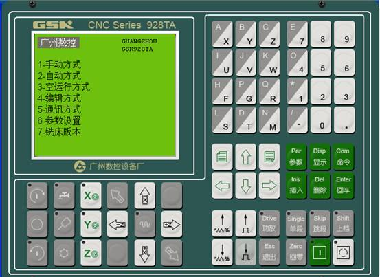
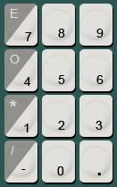

光标移动（CURSOR）
使光标向上移动一个区分单位。
使光标向下移动一个区分单位。
| GSK928TA数控系统操作 |

| 按键介绍 |

数字键 字母键
翻页按钮（PAGE）
使LCD画面的页逆方向更换。
使LCD画面的页顺方向更换。
光标移动（CURSOR）
使光标向上移动一个区分单位。
使光标向下移动一个区分单位。
 使光标左下移动一个区分单位
使光标左下移动一个区分单位
 使光标向右移动一个区分单位
使光标向右移动一个区分单位
| 手动操作虚拟数控机床 |
回零
１－Ｘ机械零点
２－Ｚ机械零点
３－ＸＺ机械零点
４－程序零点
按1-4选择相应的回零方式，屏幕相应行的后面显示“*”号，屏幕的右上角显示
“运行_” 此时，按<运行RUN>键则开始相应的回零处理。当选择4进行程序零点的回零时，屏幕的下方将显示出程序零点的相对位置。回机械零点之后，系统将记住机械零点的位置。这样加工程序之中可以执行G27回机械零点的功能，并自动检查是否有失步（失步时出E41/E42错误）。
用回零菜单的回零功能回机械零点不能检查系统有否失步！，但可消除偏差。回零的速度以当前手动速度进行（自动方式的回零速度按照G00的速度进行）。执行回零操作将消除G93坐标偏置和刀具偏置，并使系统返回工件坐标系。回零过程中可按<暂停Feed.Hold>键中断回零，并出现E64错误。
系统总是将X轴和Z轴的正方向最大位置作为机械零点，回零向正方向快速移动到达回零减速信号有效后减速至起始速度，脱开减速信号后检测到零点信号并反向到零点信号中间即当作机械零点。执行回机械零点操作时要确保系统处于回零减速信号的负方向位置。
手动
命令
１－移动
２－设置坐标
３－试切点
４－Ｘ试切数
５－Ｚ试切数
按<退出Esc>,<删除Del>,<回车Enter>键之一,不执行命令,返回手动状态。
按1-5进行相应的功能（对应显示行的右边显示出“*”号）,详述如下:
１－移动：
屏幕下方显示： X…
当前X方向绝对座标位置，此时入X轴方向要移动的位置，可有三种选择：
(1)绝对位置移动：输入X轴坐标，按<Enter回车>键。
(2)相对位置移动：先按<上页>或<下页>键，光标之前将显示出字符“D”表示将输 入相对值，输入值，按<Enter回车>键。
(3)直接按<回车Enter >键，X轴方向将不移动。 输入X轴方向值之后，屏幕下面显示: Z…
当前Z轴方向绝对座标位置，类似X值，输入Z轴方向值，最后按<Enter回车>键，系统按照GO0方式快速定位到指定位置，速度为当前手动状态的速度。
注：输入X、Z值中途按<Esc退出>键，将不执行移动定位。
２－设置坐标：（设置坐标后系统将清除机械零点标志以表明未回过机械零点）
设置当前位置的工件座标(若G92状态则为设置新的G92浮动座标将当前位置定为新的 座标位置)。屏幕下方将显示X、Z当前绝对座标位置，分别进行输入（类似命令1-移动 进行输入）即完成工件座标设置。
设置新的工件座标，将不会改变程序零点的实际位置。即程序零点的座标已相应地变化，但其相对位置不变。对于工件坐标系通常将X轴中心位置设为X0.00，Z轴靠主轴方向的位置设为Z0.00。
３－试切点：
试切对刀或定点对刀用。进行试切时当刀具在试切位置或在定点对刀位置时，用该 功能（手动.命令3）确认对刀的位置。之后可以手动移开刀架，停止为轴，量出试切的 直径值或Z轴方向的位置。命令3执行时屏幕上对应“3-试切点”的右边显示“*”号，大约2秒钟的时间，表面系统已记住确认的位置座标（计算刀偏用）。
４－Ｘ试切数：
试切对刀，定点对刀用。手动.命令3确认试切点之后，用该功能输入量出的试切点直径值，将该直径值输入给系统，以认算出X轴方向的刀偏值。进入命令4屏幕下方显示： X （命令3时的X座标位置）
输入量出的直径值（定点对刀时输入0值），之后系统显示出X刀偏值，并显示“X T0a―”（其中a为当前刀具号），此时可有三种选择：
1.直接按<回车Enter>键，系统将刀偏值存入当前刀具号相同的刀偏号之中（X方向刀偏值）。
2.按数字键1-9，再按<回车Enter>键，则在数字键对应的刀偏号中存入刀偏值（X方向刀偏）。
3.
按<Esc退出>键，不进行刀偏设置。
５－Ｚ试切数:
类似命令4-X试切数。输入Z轴试切位置的值，设置Z轴方向为刀偏值。
执行零件加工程序的过程称为自动方式。从系统主菜单进入自动方式时,若显示 E92 错,表示程序区中无任何加工程,按任一键返回主菜单。否则,系统显示:
RUN P.. 显示当前的程序编号(0～99)
_ 输入要使用的程序号(0～99)
若输入的程序是空的,将会显示E86错误,按任一键之后,重新输入程序号，
若输入过程中按<退出Esc>键,将返回系统主菜单。
若输入时直接按回车,表示使用显示的当前程序。
提示: 复制 P_ P_
输入源程序号(0~99)；
输入目的程序号(0~99)；
若源程序空, 继续输入源程序号；
若程序区已满, 提示E90 , 按任一键继续；
若目的程序有内容, 提示 OVER Y_ 按Y 则覆盖掉, 按其它键不拷贝；
若文件正常复制则继续进行复制；
按<退出Esc>键：退出复制，返回编辑方式菜单提示。
只有在打开状态才能输入和修改加工程序
提示: 打开程序区 _
顺序按 U N L K <回车Enter> 键则:
提示 OK 按任一键返回(表示已打开锁)；
若按的键非以上字母或顺序, 则直接返回(未打开锁)。
提示: 删除程序 P_
输入程序号(0_99), 若按<退出Esc>键退出(输入大于99的值亦退出)；
提示： Y_ 按 Y 则删除程序(其它键不删),继续删除操作； 若要删除的程序是空的继续删除操作。
提示: 初始化程序区 Y_
按Y键则: 删除所有的程序，按其它键不作初始化。
几条出错信息的说明(显示之后,按任一键继续):
E86 未查找到字符串 (编辑时), 或要复制的程序是空的；
E88 内存锁住,不能对加工程序进行插入或修改(编辑时)；
E90 程序区已满,不能再插入；
E91 当前程序的检查和出错；